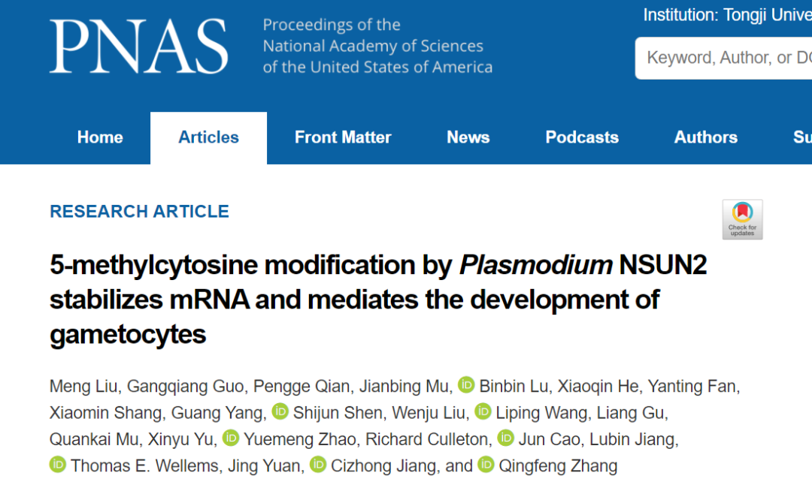
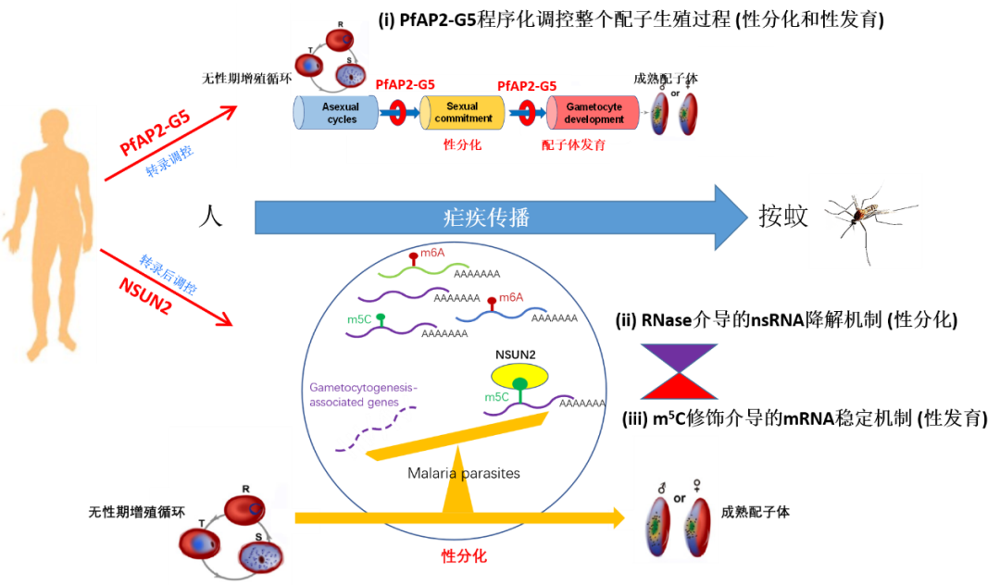

揭示表观转录组调控疟疾传播的新机制
5-methylcytosine modification by Plasmodium NSUN2 stabilizes mRNA and mediates the development of gametocytes

疟疾（malaria）是由疟原虫感染引起的寄生虫病，与艾滋病、结核病并列全球三大传染病之一，全球有近90个国家和地区存在疟疾流行，每年约2.4亿人感染，导致约60多万人死亡。我国虽然实现了消除疟疾目标，但目前仍有大量境外输入病例，如何防止输入再传播是巩固我国消除疟疾成果的关键。疟原虫的生活史需要经历人和按蚊两个宿主，只有成熟的配子体才能通过按蚊传播。因此，疟原虫的配子生殖过程，即在人体内红细胞寄生阶段的无性体（asexual forms）向配子体（gametocytes）的性分化和发育（sexual commitment and development），是疟原虫感染按蚊的关键，也是疟疾传播的决定性环节。在之前的研究中，张青锋课题组已从转录水平和转录后水平分别揭示了两条调控疟原虫配子生殖的表观遗传调控途径：(i) 转录抑制因子AP2-G5与转录激活AP2-G协同调控整个配子生殖过程，包括性分化与性发育，直至成熟配子体的产生【1】（详见BioArt报道: NAR ǀ 张青锋等发现疟疾传播的核心调控因子）；(ii) RNA降解酶（Exosome-associated RNases）如RNase II和Rrp6等通过实时降解靶基因的新生RNA（nsRNA），调控配子生殖过程的启动（性分化）【2,3】。但是，对于表观转录组是否参与调控疟原虫配子生殖，目前尚不清楚。
2022年2月25日，同济大学医学院张青锋课题组联合生科院江赐忠、厦门大学袁晶及美国国立卫生院Thomas Wellems等团队在美国科学院院刊PNAS上发表了题为5-methylcytosine modification by Plasmodium NSUN2 stabilizes mRNA and mediates the development of gametocytes的研究性论著，首次揭示了表观转录组调控疟原虫配子生殖的表观遗传调控新机制，鉴定了新调控因子NSUN2并阐明其作用机制，为疟疾传播阻断新措施的研发提供了新靶点【4】。
在本研究中，作者首先利用定量质谱、BisSeq等技术，在单核苷酸水平上绘制了鼠疟原虫（约氏疟原虫P. yoelii）与人疟原虫（恶性疟原虫P. falciparum）不同发育阶段（无性期和配子体期）的mRNA m5C甲基化修饰的全基因组图谱。相对于丰富较高的m6A甲基化修饰，疟原虫转录组中的m5C修饰水平较低，靶基因也相对较少，提示这种修饰可能具有更为特异的生物学功能。随后，通过转录组和蛋白表达组分析发现，m5C修饰的mRNA具有更长的半衰期，其蛋白质水平也更高。这表明m5C修饰与疟原虫转录本的稳定性及翻译水平具有正相关性，能够在转录后水平上对疟原虫的基因表达水平进行矫正，从而实现不同基因的阶段特异性表达。
值得关注的是，作者通过对m5C靶向基因的功能聚类分析，发现m5C修饰的生物学功能指向疟原虫的有性生殖过程。在约氏疟原虫和恶性疟原虫基因组中，各有4个m5C甲基转移酶候选基因，即Pynsun1~4及Pfnsun1~4，但是不清楚谁是负责催化mRNA m5C甲基化修饰的关键基因。为此，作者通过CRISPR-Cas9基因编辑技术对这些候选酶基因展开了基因敲除工作，最终获得了Pynsun1、Pynsun2及Pfnsun2等基因敲除虫株。通过表型分析发现，Pynsun2_KO与Pfnsun2_KO皆基本丧失了配子生殖能力，而且这种功能缺陷能够通过基因修复而得以恢复。进一步的机制研究发现：NSUN2蛋白是疟原虫中负责mRNA m5C修饰的关键甲基转移酶，它的缺失直接影响疟原虫配子体发育相关的靶基因转录本m5C修饰水平，使疟原虫产生成熟配子体的能力明显下降；并在感染蚊子后，各个有性期发育阶段的虫体数量也显著下降，包括最终能够感染人的子孢子阶段，最终严重影响了疟疾传播的效率。
综上，该研究通过表观转录组组学分析，结合疟原虫基因功能研究，首次绘制了疟原虫m5C甲基化修饰为标志的表观转录组图谱，并揭示了这种转录后修饰对疟原虫有性生殖的调控作用及机制，不仅为全面理解疟原虫有性生殖调控机制提供了新的理论（见模式图），而且为阻断疟疾阻断的新药或疫苗研制提供一个新靶点。